Fusion has a single API that can be used from Python, C++, or TypeScript. In most cases, the API is used in a very similar way regardless of the programming languages with just small language specific syntax changes. However, in some cases there are significant differences in how the API is used because of a particular language. This topic discusses the differences that are unique to Python and covers the subjects listed below. For differences unique to other languages, see the C++ Specific Issues or TypeScript Specific Issues topics.
To create a new Python add-in you use the "Create" button in the Scripts and Add-Ins dialog to display the "Create New Script or Add-In" dialog and choose "Python" as the programming language, as shown below.
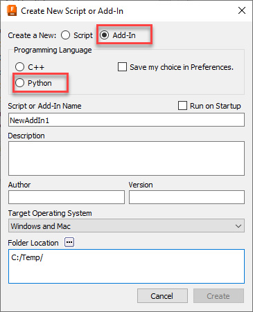
Creating a new Python add-in will create a full add-in that you can immediately run. It provides a framework that you can edit to modify it to support the functionality your add-in requires. You can read more about the add-in template it creates and how to use it in the Python Add-In Template topic in the User Manual.
When editing or debugging a Python script or add-in, the VS Code IDE (Integrated Development Environment) will be displayed. The VS Code IDE and the Python code created for a new script can be seen below.
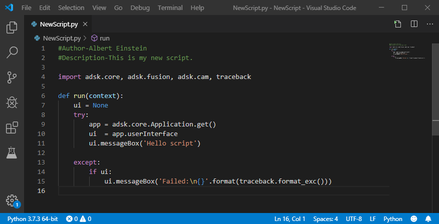
An important feature of any development environment is the ability to debug your program. To debug Python code, VS Code requires the optional “ms-python.python” extension. This extension is automatically installed the first time Fusion opens VS Code.
You can edit your script or add-in from within VS Code by running the Scripts and Add-Ins command, selecting the script or add-in, and clicking the "Edit" button, as shown below.
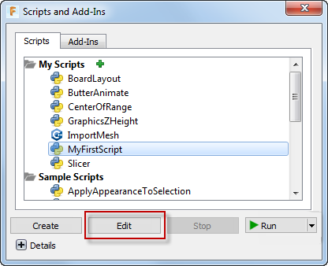
This will open the script in VS Code. Click on the left edge of the code window to add break points where you want execution to stop while debugging, as shown below.
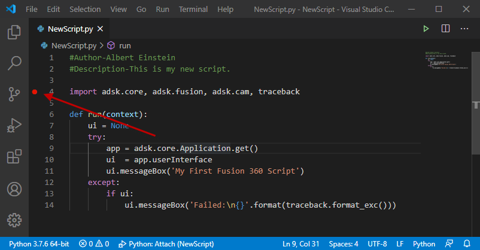
To start debugging, run the "Start Debugging" command by running it from the "Run" menu, as shown below, or using F5. Fusion will start executing your script but will stop execution at the first break point it hits.
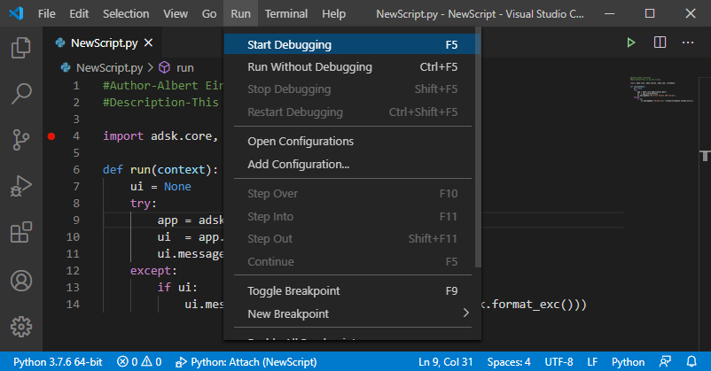
The picture below shows VS Code after we've started debugging the script. Execution has stopped at a breakpoint at the messageBox line and some other windows are now displayed with some additional information that can be useful when debugging.
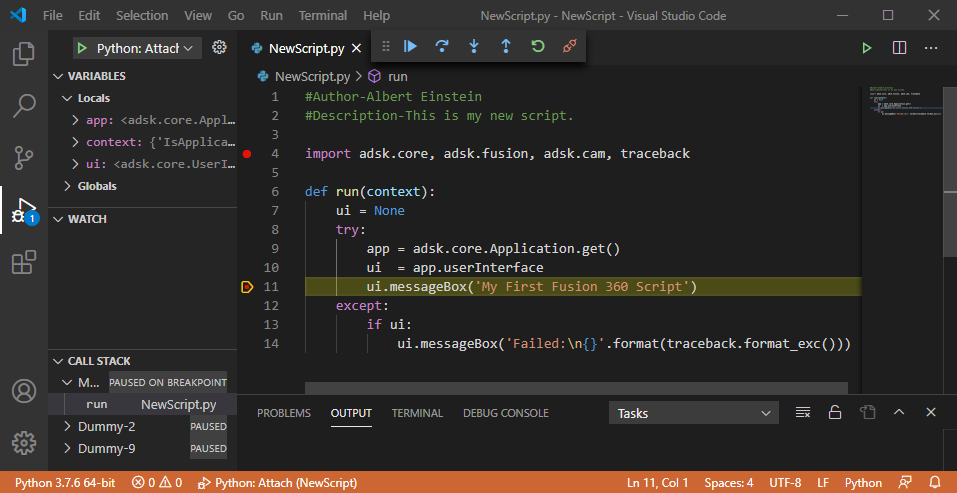
Once you've started debugging you can use the debug commands in the toolbar that pops up, or keyboard shortcuts, to control stepping through your code. VS Code supports the typical options to step through your code where can:
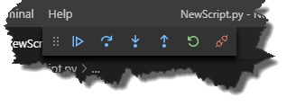
VS Code provides a rich debugging environment where you can see the current values of variables in the VARIABLES pane of the Debug Side Bar and add specific variables to the WATCH pane. You can also hover the mouse over variables and VS Code will display the value of the variable or the values of all of the properties associated with an object. Below is the result when I hover over the variable called ui that's referencing the UserInterface object. It shows all of the properties the UserInterface object supports and their current values.
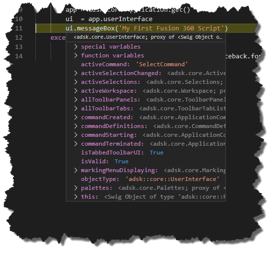
When you've finished debugging click the "Disconnect" button to stop debugging. You can then further edit your program and start debugging again. When debugging a script you can stop and restart it over an over again from within VS Code. Debugging an add-in is slightly different.
When you run a script, Fusion loads the script, runs it, and unloads it. Add-ins are different in that they are typically automatically loaded and run by Fusion when Fusion starts. They continue to run in the background until Fusion is shutdown. Before debugging an add-in you need to make sure it isn't already running, and if it was you need to stop it. While initially writing your add-in it's good pracitve to uncheck the "Run on Startup" setting (as shown below) in the "Scripts and Add-Ins" dialog so Fusion doesn't automatically start it on start-up. Add-ins that are running will have the little wheel beside them. if it's running, click the "Stop" button. Now you can debug the add-in.
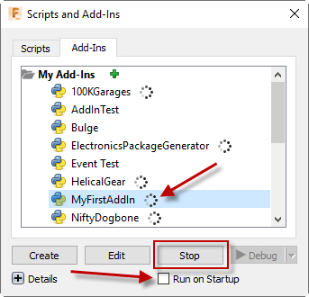
Start debugging the add-in from within VS Code the same way as you would debug a script. Fusion loads the add-in and calls the run method, just like it does for scripts. Typically an add-in will create it's user-interface and connect to events in the run method and then run in the background waiting for an event to fire. Starting to debug the add-in will execute the run method and then appear to be done but the add-in is still running but waiting to respond to an event which is typically the execution of one of its commands. Switch to Fusion and run the add-in command. Any break points in the command created event handler will now be hit and you can debug the command execution.
When an add-in is stopped using the "Stop" button in the "Script and Add-Ins Dialog", Fusion calls the add-in's stop method to allow it to clean up before it's unloaded. Typically, the stop function removes any user-interface items the add-in added when it was loaded. To stop an add-in in a controlled way, you can switch back to Fusion and from the "Scripts and Add-Ins" dialog, choose the add-in and click "Stop". This will cause the stop method to be called and any break points will be hit allowing you to debug the stop function.
If you intentionaly disconnect the debugging session or are forced to stop debugging because of a bug, you'll halt the execution of the add-in before it has a chance to stop. Even though you've disconnected the debugger, the add-in is still running in Fusion. You can stop it using the "Scripts and Add-Ins" dialog. However, if you start debugging the add-in from VS Code, Fusion will call the add-in's stop method before starting the new debug session.
Python does not support output or 'by reference' arguments. For example, the Point3D.getData method is designed as:
boolean Point3D.getData( out double x, out double y, out double z )
The x, y and z arguments are of type 'out double' where 'out' indicates a 'by reference' argument. The documentation indicates that this argument will be used as an output argument containing the result.
In Python, all function outputs are returned as the function's single return value, which for Python will be a tuple if there are any out arguments. The first value in the tuple will always be the documented return value of the function. The other values will be the out arguments in the same order as they are listed in the argument list. The example below illustrates calling the Point3D.getData function and directly assigning the results into variables.
(retVal, x, y, z) = point.getData()
Fusion collection objects are any object that supports the count property and item method, (and typically many other functions too). The wrappers that are generated for collections for the Fusion Python interface support the standard Python container iteration and length syntax so you can choose between using count and item or the more Python friendly iterator. For example, instead of:
for i in range(col.count):
item = col.item(i)
...
You can use this instead:
for item in col:
...
You can also use the len function so instead of col.count you can use len(col).
For accessing a specific item within a collection you can use the Fusion API provided item method or you can use the standard Python container accessor so instead of using col.item(i) you can use col[i]. In addition to this, because collections are using a standard Python container you can also use the container "slice" syntax to get a subset of items from a collection. For example:
The API also frequently uses what is referred to in the documentation as an "array". The term "array" is used generically in the API documentation and describes different things depending on the language being used. When using C++, std::vector is used to input and output a list of items. When an array is specified as input, you can create a Python List or Tuple and use that. However, when an array is returned from a method or property, it's not returned as a standard Python List but is a special API-specific object called "vector". Typically, you won't notice this isn't a List because it supports Python iteration like a List does. However, there are other things that a list supports that a vector does not. For example, you can't use append to add items. You can easily convert the vector into a standard Python List, as shown in the example below.
# Explode the sketch text and get the resulting curves. curves = skText.explode() # Convert the returned vector into a Python List. curvesList = list(curves)
Python is not a strongly typed language. However, you can find out what specific type an existing object is. There are a couple of approaches. First you can use the type() function to get the type of an object.
# Get the currently selected entity. selObj = app.activeSelection.item(0).object # Check to see if it's a sketch line. if type(selObj) is adsk.fusion.SketchLine: print( "SketchLine is selected." )
The type() function returns the immediate type of an object but doesn’t work if you want of find out if an object is inherited from another object. For example, the code below doesn't work and will never enter the if statement because all objects will be their specific type.
# Get the currently selected entity. selObj = app.activeSelection.item(0).object # Check to see if it's any type of sketch entity. # This will never work because objects are a specific type. if type(selObj) is adsk.fusion.SketchEntity: print( "A sketch entity is selected." )
A SketchLine is derived from SketchCurve, which is derived from SketchEntity, which is derived from core.Base. If you have an object and want to see if it’s any type of sketch entity you can use the isinstance() function instead of type(), as shown below.
# Get the currently selected entity. selObj = app.activeSelection.item(0).object # Check to see if the entity is derived from SketchEntity. if isinstance(selObj, adsk.fusion.SketchEntity): print( "Is some kind of sketch curve." )
It is common to need to compare whether two object variables are referencing the same Fusion object. In Python you can use the equality operator ‘==’. The code below checks two variables to see if they reference the same face.
# Compare the two variables to see if they reference the same face.
if face1 == face2:
print( "Faces are the same" )
The Python "is" identity operator cannot be used to compare two Fusion objects. Instead you must use the equality operator as shown above.
Although Python is not a strongly typed language the IDE still attempts to figure out the type that a variable represents so it can show the appropriate code hints for that object. For example, in the picture below, the IDE knows that the adsk.core.Application.get function returns an Application object so when you type the period after app, it shows the list of methods and properties supported by the Application object. The same is true when you use the ui variable because it knows it's referencing a UserInterface object.
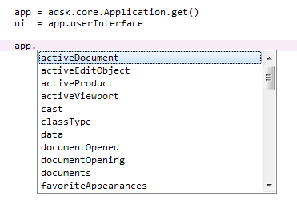
The ability for the IDE to correctly handle code hints falls down when properties are typed to return a base class but actually return one of the derived classes. A common example of this is the use of the activeProduct property of the Application object. This property is typed to return a Product object, but will always return a more specific object type that is derived from Product. When working with a model it will return a Design object. The picture below shows the code hints given, which are only the methods and properties supported by the Product object but it's most likely that you'll want to access the methods and properties that are specific to the Design object. You can still write the code without using code hints and it will run just the same but having code hints can greatly improve your ability to use the API by quickly showing you what methods and properties an object supports and the arguments that a method requires.
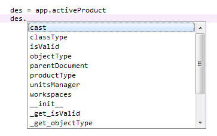
Although it's not needed for the program to run, you help the IDE understand the type of variables so it can show the appropriate code hints. There are two ways to do this in Python; type hints and casting. You do this in Python by using the static "cast" function.
Type hints is a Python feature that is new since Python 3.5. It let's you declare variables with the type. This information is not used by Python at runtime but is only used by the IDE to provide better code hints. The code below is an example of specifying the variable "des" is a Design object. The IDE will now treat this variable as Design type. Because Python doesn't use this information, there isn't any validation performed at runtime. If the Manufacturing workspace is active when this code is run, the des variable will be assigned a CAM object and the execution will continue where it will likely fail later when a call is made that expects it to be a Design product. See the section above on Object Types for ways to determine the type of an object.
# Get the active Design product. des: adsk.fusion.Design = app.activeProduct # Now there will be good code hints for the variable "des".
Type hints can also be used for function arguments and the return value of a function, as shown below. See the Python documentation more information about the full capabilities of type hints.
def CheckIfHollow(body: adsk.fusion.BRepBody) -> bool: if body.shells.count > 1: return True else: return False
Another method of getting better code hints is the "cast" function. This is used below to cast the variable to be a Design object and you can see that the code hints are now showing all of the methods and properties supported by the Design object. The call of the cast function will return None in the case where the active product is not a design, which is different than using type hints.
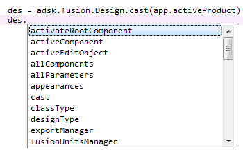
Here's an example of where using the "cast" function can be useful. When using the UserInterface.activeSelections property you can get back any type of object that can be selected. The actual entity being selected is returned by the Selection.entity property which is typed to return a Base object, which is what all Fusion objects are derived from and is not very useful for code hints. If you know the type of object that will be selected or only want to handel a specific object type, you can use the cast function to check if the expected type is selected, as shown below.
sels = app.userInterface.activeSelections
# Cast the selection to an edge.
edge = adsk.fusion.BRepEdge.cast(sels[0].entity)
if not edge:
ui.messageBox('An edge was not selected.')
return
Many modules have been written for Python to expand its capabilities. The Python provided with Fusion includes only the core modules that come with a standard installation of Python. However, you can use other modules by making them available to your Python program. Instead of installing or adding the module to sys.path we recommend that you have a local copy of the module for your script. To do this you install the Python module in the same directory as your script or a subdirectory. The layout below is what's recommended where the script name in this case is "MyScript" and the name of the Python module is xlrd (a module that provides access to Microsoft Excel files).
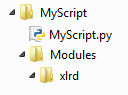
To reference the module in your Python script you use the relative path syntax as shown below.
from .Modules import xlrd
Python runs within the Fusion process and also runs in the main Fusion thread. Because of this, when your program is running must of Fusion appears frozen because it never gets a chance to react to messages. A common example of this is when your script or add-in is editing the model. Even though your program is successfully running and making the expected changes to the model, you don't see those changes until your program completes. This is because the messages sent by the system to update the display are not able to be handled because the main thread is running the script or add-in.
In some cases this is actually desirable because less time is spent updating the graphics and the total time to execute the program is faster. However, in other cases it's better if the user can watch the model being built as a way to make sure it's correct and because it also serves as a type of progress meter. Another example of when this is needed is when you're manipulating the camera to fly around and through the model. Fusion needs to be able to handle and react to the camera changed message to be able to update the display. The API supports a doEvents function which temporarily halts the execution of the add-in or script and gives Fusion a chance to handle any queued up messages. Below is an example script that creates 100 new instances of a selected component. With the doEvents call you see each occurrence as it is added to the assembly. Without it, the graphics don't update until the program finishes.
def copyOccurrence():
ui = None
try:
app = adsk.core.Application.get()
ui = app.userInterface
occ = adsk.fusion.Occurrence.cast(ui.selectEntity('Select an occurrence', 'Occurrences').entity)
if occ:
root = app.activeProduct.rootComponent
# Get the referenced component.
comp = occ.component
# Create 100 occurrences offset 5 cm in the X direction from the selected occurrence.
trans = occ.transform
offset = trans.getCell(0, 3)
for i in range(0, 100):
offset += 5
trans.setCell(0, 3, offset)
root.occurrences.addExistingComponent(comp, trans)
# Call doEvents to give Fusion a chance to react.
adsk.doEvents()
except:
if ui:
ui.messageBox('Failed:\n{}'.format(traceback.format_exc()))